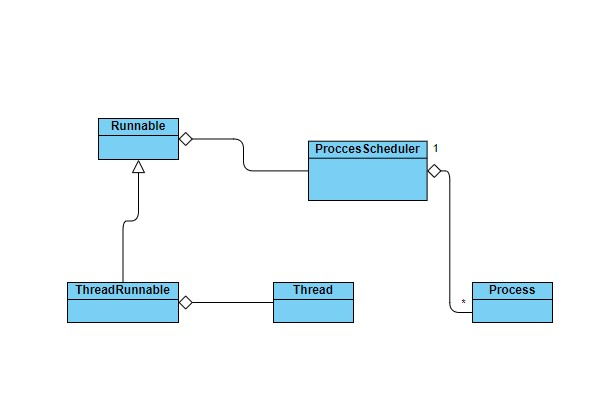

Contents of this section:
Introduction
As it was said in the main page, the core pieces of the tasking system are:
-
mel::tasking::Process : Represents a task with microthread capabilities. We will explain this capabilities later in the text
-
mel::tasking::ProcessScheduler : Simple scheduler executing processes sequentially. It's designed for performance in mnind, so no priority considerations, and only execute processes and evict them when finished. The idea is posting new tasks to be as fast as possible.
-
mel::tasking::Runnable : Base class serving as interface between final user a the internal ProcessScheduler it has.
-
mel::tasking::ThreadRunnable : A Thread with Runnable behaviour. This will be the most common tool to spread new threads and work with tasks.
Here a very simple class diagram showing their relationships.

Posting tasks to runnables
Runnables are only a wrapper around ProcessScheduler to facilitate tasks management. A Runnable usually consists only in executing the tasks in the internal scheduler in an infinite loop. Usually it's enough to use a ThreadRunnable, which is an specialization executing the tasks in a thread.
Now, better let's shown an example and explain the different parts:
void _sampleTasking1()
{
auto th1 = ThreadRunnable::create(true);
constexpr unsigned int period = 450;
auto& killPolicy = Runnable::killTrue;
th1->post([](uint64_t msecs,Process* p)
{
mel::text::info( "execute task. Time={}",msecs);
return ::mel::tasking::EGenericProcessResult::CONTINUE;
},killPolicy,period);
}
static void sleep(const unsigned int millis)
The result of the code is, simply, to execute a task given by the lambda (any callable can be used for posting tasks. Lambdas are used throughout the documentation for simplicity) every 450 msecs during 5000 msecs. Now let's explain the important parts:
- A task always receive the scheduler time (msecs parameter) and the process which is executing the function. Keep in mind that this post method is only a helper for posting tasks. The very basic method is, really, mel::tasking::Runnable::postTask. but this need user to create you own process and implementing the neccesary interface.
- A task will finish in two situations:
- returning mel::tasking::EGenericProcessResult::KILL
- calling mel::tasking::Process::kill on the process. A ThreadRunnable, when destroyed, will try to kill all its processes, and waits until all process are finished. If a posted task use de killPolicy killTrue, it will be automatically killed when it receives a kill request. In case of using killFalse the kill will always be rejected. Really, the killPolicy argument is a callable which will be evaluated when the process receives a kill signal, so allowing to acept or reject the kill according to other things; killTrue and killFalse are only helpers for these common behaviours.
If we had removed the line with the sleep at the end of the function, th1 would be destroyed inmediately after the post, and so, the posted task would be killed inmediately.
If we had have the next code:
auto th1 = ThreadRunnable::create(true);
constexpr unsigned int period = 450;
auto& killPolicy = Runnable::killFalse;
th1->post([](uint64_t msecs,Process* p)
{
mel::text::info( "execute task. Time={}",msecs);
return ::mel::tasking::EGenericProcessResult::CONTINUE;
},killPolicy,period);
In this case the function will never end: th1 will be waiting for its taks (only one task in this case!) sending them a kill request. But, because that task is using Runnable::killFalse it will always reject this kill request. Also, the posted task could be taken and killed directly:
auto th1 = ThreadRunnable::create(true);
constexpr unsigned int period = 450;
auto& killPolicy = Runnable::killFalse;
std::shared_ptr<mel::tasking::Process> task = th1->post([](uint64_t msecs,Process* p)
{
mel::text::info( "execute task. Time={}",msecs);
return ::mel::tasking::EGenericProcessResult::CONTINUE;
},killPolicy,period);
task->kill(true);
A very common case is posting task that only need to be executed once, so the interface could be simplified. Thsi is accompmplished by fireAndForget. In this case the task iput parameters are removed and the function automatically returns mel::tasking::EGenericProcessResult::KILL
th1->fireAndForget( []()
auto th1 = ThreadRunnable::create(true);
constexpr unsigned int period = 450;
constexpr unsigned int startTime = 50;
th1->fireAndForget( []()
{
mel::text::info( "Done!");
},startTime,Runnable::killFalse);
Microthreading
A microthread, implemented in class Process, is a task that can be interrupted at any point and, when resumed, continue executing from that point. This allows to be able to execute a huge number of tasks with cooperative multitasking with very litlle penalty. If a task doesn't make any context switch, the penalty is almost 0. The cost only occurs when a context switch is done and when recovering later. Actually is very little cost, but of course it exists. The functions which control context switches are: switchProcess, wait and sleep (and its counterpart wakeUp). Those functions are static. This means that calling any of they, the current process (in the current threads) is affected. This is exactly the same as with threads: you call a "sleep", event waits... inside the current thread, but no passing them a thread as a parameter. The exception, as is natural, is the function wakeUp which need to know what process to wakeup.
In the next code, two tasks are executing code in an interleaved way, showing an example of cooperative multitasking.
void _sampleTasking2()
{
auto th1 = ThreadRunnable::create(true);
auto t1 = th1->fireAndForget([]
{
mel::text::info( "Task 1, Step1" );
mel::text::info( "Task 1, Step2" );
mel::text::info( "Task 1, Step3. Going to sleep.." );
mel::text::info( "Task 1, Awaken!!" );
},0,Runnable::killFalse);
th1->fireAndForget([t1]
{
mel::text::info( "Task 2, Step1" );
mel::text::info( "Task 2, Step2" );
mel::text::info( "Task 2, Going to wake up task1" );
t1->wakeUp();
},0,Runnable::killFalse);
}
static ESwitchResult switchProcess(bool continueInmediately) OPTIMIZE_FLAGS
Evict current process and will continue executing from the same point the next time is scheduled.
static ESwitchResult sleep() OPTIMIZE_FLAGS
pause current process. To reactivate you must use wakeUp
static ESwitchResult wait(unsigned int msegs) OPTIMIZE_FLAGS
And the output will be:
[2022-04-08 18:59:13.404] [info] Task 1, Step1
[2022-04-08 18:59:15.705] [info] Task 2, Step1
[2022-04-08 18:59:15.705] [info] Task 1, Step2
[2022-04-08 18:59:15.705] [info] Task 1, Step3. Going to sleep..
[2022-04-08 18:59:15.904] [info] Task 2, Step2
[2022-04-08 18:59:20.904] [info] Task 2, Going to wake up task1
[2022-04-08 18:59:20.904] [info] Task 1, Awaken!!
The "context-switch" functions return a value of type Process::ESwitchResult reporting the success or not of the call. This result code is very important in case of process killing: when a process is notified a kill (mel::tasking::Process::kill), if this process is in a "context-switched state", it won't be finished, but it will return from this state with the code mel::tasking::Process::ESwitchResult::ESWITCH_KILL. The user should therefore check this code and, when killed, not continue executing. In the previous example, because the use of the fireAndForget and killFalse, it's not really neccesary to do those checks (although is convenient for consistency). In the next section we will go deeper in task management and this will become clearer.
It's important to note that context switch functions can be called in anywhere in the call chain, just the same way threading functions (sleep, etc...) are used. So, this means that we could have this code:
void f1()
{
}
void f2()
{
f1();
}
auto th1 = ThreadRunnable::create(true);
auto t1 = th1->fireAndForget([]
{
mel::text::info( "Task 1, Step1" );
f1();
},0,Runnable::killFalse);
This point is very important and makes the main diference with usual coroutines in C++20 or in any other language and which make then not interchangeable. For example, lets see an example in javascript:
Terminating tasks
The way a task is killed was mentioned before. Although users could need to directly call kill in some situations, usually this will be done automatically when using mel::tasking::ThreadRunnable : when an instance is destroyed, it tries to kill all of its tasks and wait (mel::tasking::ThreadRunnable::join) for it. Let's see the following code:
{
auto th1 = ThreadRunnable::create(true);
constexpr unsigned int period = 450;
auto& killPolicy = Runnable::killFalse;
std::shared_ptr<mel::tasking::Process> task = th1->post([](uint64_t msecs,Process* p)
{
mel::text::info( "First Wait. {}" );
Process::wait(1000);
mel::text::info( "Context switch:{}");
Process::switchProcess(true);
return ::mel::tasking::EGenericProcessResult::CONTINUE;
},killPolicy,period);
Thread::sleep(5000);
}
Here, a task is thrown, and, after 5 seconds, th1 it's destroyed because the scope is left. In this destruction, th1 send kill signal to all of its processes (only one in this case) and wait for its termination. But that process never ends for two reasons:
- it's always returning CONTINUE
- killPolicy is set to killFalse , which means that this process won't be automatically killed when receiving kill signal
So, in order the task to be killed, we could set the killPolicy to true as in the next code:
void _sampleTasking4()
{
struct MyString
{
MyString()
{
data = new char[10];
strcpy(data,"Hello!");
}
~MyString()
{
mel::text::info("Destroying MyString");
delete []data;
}
char* data;
};
auto th1 = ThreadRunnable::create(true);
constexpr unsigned int period = 450;
auto& killPolicy = Runnable::killTrue;
MyString str;
std::shared_ptr<mel::tasking::Process> task = th1->post([&str](uint64_t msecs,Process* p)
{
mel::text::info( "Before Wait. {}",str.data );
Process::wait(10000);
mel::text::info( "After Wait. {}",str.data );
return ::mel::tasking::EGenericProcessResult::CONTINUE;
},killPolicy,period);
Thread::sleep(5000);
}
Now, the code finishes ok, with output:
[info] Before Wait. Hello!
[info] Sleep done
[info] Destroying MyString
[info] After Wait. ¦¦¦¦¦¦¦¦¦¦¦¦¦¦
But that log is weird..the issue is that that task returns from the wait because the kill, but, as was explained here, the task continue executing until the function finishes. So, this is what is happening:
- the task is switched in the wait line for 10 seconds
- in the meanwhile, the calling thread sleeps or 5 seconds
- once the thread sleep time has elapsed, the current scope ends and all inner objects are destroyed, **in the reverse order of their creation*. This means that str object is destroyed before th1.
- In its destruction, th1 send kill signal to the task, which inmediately return from its wait. And, after that, the str object is accessed, so accesing invalid/corrupter memory. The solucion here is, therefore, check the return code in the wait function and not continue executing if returns from a kill signal:
void _sampleTasking4_ok()
{
struct MyString
{
MyString()
{
data = new char[10];
strcpy(data,"Hello!");
}
~MyString()
{
mel::text::info("Destroying MyString");
delete []data;
}
char* data;
};
auto th1 = ThreadRunnable::create(true);
constexpr unsigned int period = 450;
auto& killPolicy = Runnable::killTrue;
MyString str;
std::shared_ptr<mel::tasking::Process> task = th1->post([&str](uint64_t msecs,Process* p)
{
mel::text::info( "Before Wait. {}",str.data );
if ( Process::wait(10000) == Process::ESwitchResult::ESWITCH_OK)
mel::text::info( "After Wait. {}",str.data );
return ::mel::tasking::EGenericProcessResult::CONTINUE;
},killPolicy,period);
Thread::sleep(5000);
}
Custom task types
Although posting tasks to runnables using callables (post) is very flexible and enoguh in the vast majority of the cases, sometimes more control is needed. With the use of postTask we can post directly an instance of a Process specialization. In this case, we will need to implemente some pure virtual member functions:
{
struct MyProcess : public Process
{
void onInit(uint64_t msecs) override
{
mel::text::info("MyProcess::oninit");
count = 0;
};
void onUpdate(uint64_t msecs) override
{
mel::text::info("MyProcess::onUpdate");
++count;
}
virtual bool onKill() override
{
return count == 10;
}
private:
int count;
};
auto th1 = ThreadRunnable::create(true);
constexpr unsigned int period = 450;
auto& killPolicy = Runnable::killFalse;
auto task = std::make_shared<MyProcess>();
task->setPeriod(1000);
th1->postTask(task);
}
In this example, a custom class with a custom behaviour, such that the process will be killed after 10 iterations (so, 10 seconds because period is set to 1 second).
Another way to customize the task type is by providing the allocator to use when posting a callable. There are two diferent ways of doing it:
- Changing the default factory used when creating task through Runnable::post: when a callable is posted to a Runnable, by default the underlying task is created using the DefaultAllocator, which uses de default factory set for this Runnable. Users can change this default factory by calling mel::tasking::Runnable::setDefaultFactory
- Providing a custom Allocator as template parameter: the function mel::tasking::Runnable::post is templatized, receiving the AllocatorType as its first template parameter. The only requirement for this allocator is to have an allocate static function, as in mel::tasking::DefaultAllocator::allocate
Let's see an example for the method in 1.
class CustomProcessType : public GenericProcess
{
public:
CustomProcessType()
{
::mel::text::info("CustomProcessType constructor");
}
};
{
public:
GenericProcess*
onCreate(Runnable* owner)
const override {
return new CustomProcessType();
}
};
auto th1 = ThreadRunnable::create(true);
th1->setDefaultFactory( new CustomProcessFactory );
th1->fireAndForget( []
{
mel::text::info("execute");
},0,Runnable::killTrue);
Base factory class for tasks.
Definition: Runnable.h:63
virtual GenericProcess * onCreate(Runnable *owner) const
Reimplement in children to change default behaviour.
One the factory is set, all the tasks posted to that Runnable will be created through it.
And now, an example for the method in 2.
class CustomProcessFactory
{
public:
GenericProcess*
create(Runnable* owner)
const {
return new GenericProcess();
}
};
struct MyAllocator
{
static GenericProcess* allocate(Runnable* _this)
{
return factory.create(_this);
}
static CustomProcessFactory factory;
};
void _sampleTasking7()
{
auto th1 = ThreadRunnable::create(true);
th1->fireAndForget<MyAllocator>( []
{
mel::text::info("execute");
},0,Runnable::killFalse);
}
GenericProcess * create(Runnable *owner) const
Create new process for given Runnable.
Definition: Runnable.h:66
With this last method, given allocator is only used for this concrete case, any other post on that Runnable will use the DefaultAllocator (or its own if given as in this example). As can be seen, the given factory for this case doesn't need to inherit from ProcessFactory, so saving the cost of a virtual function call, which could be very important if used in an environment where performance is critical.
Runnable specialization
The base Runnable task doesn''t do any work. You will need to specialize it. Let's see the most basic example:
void _sampleCustomRunnable()
{
class MyRunnable : public Runnable
{
public:
MyRunnable():Runnable( Runnable::RunnableCreationOptions())
{
}
void processTasks()
{
Runnable::processTasks();
}
};
MyRunnable r;
r.post([](RUNNABLE_TASK_PARAMS)
{
mel::text::info("Task 1");
Process::wait(1000);
mel::text::info("Task 1 - end");
return ::mel::tasking::EGenericProcessResult::CONTINUE;
});
r.fireAndForget([]
{
mel::text::info("Task 2");
Process::wait(1000);
mel::text::info("Task 2 - end");
});
while(true)
{
r.processTasks();
}
}
The only thing the Runnable specialization (MyRunnable) has to do, is to call Runnable::processTasks which is a protected function not exposed publicy to avoid calling it by the users.
Synchronization macros
In many situations, some functions or member functions need to be called in a concrete Runnable. For example, is typical in a UI system or graphics engine to be obliged to execute their functions in a concrete thread. In that cases, the user should know this limitation and take care of that when calling that functions.
MEL provide the mechanisms to force these functions execution in their mandatory Runnable. For this purpose there are a couple of macros in synchronization_macros.h. As always, let's see an example:
std::shared_ptr<Runnable> sRunnable;
static int f1_sync(int v)
{
throw std::runtime_error("ERROR in f1!!!!");
return v + 5;
}
class MyClass
{
public:
};
string MyClass::f2_sync(int v1,float v2) noexcept
{
return "f2_sync "+std::to_string(v1)+" "+std::to_string(v2);
}
void _sampleSyncMacros()
{
sRunnable = ThreadRunnable::create(true);
{
mel::text::info("Calling static function f1 syncronized with a Runnable");
auto r = f1(6);
try
{
mel::text::info("Result = {}",res.value());
}
catch(std::exception& e)
{
mel::text::error("Exception!!. {}",e.what());
}
}
{
MyClass obj;
mel::text::info("Calling static function f2 syncronized with a Runnable");
auto r2 = obj.f2(6,9.1f);
try
{
mel::text::info("Result = {}",res.value());
}
catch(std::exception& e)
{
mel::text::error("Exception!!. {}",e.what());
}
}
}
Output:
[info] Calling static function f1 syncronized with a Runnable
[error] Exception!!. ERROR in f1!!!!
[info] Calling static function f2 syncronized with a Runnable
[info] Result = f2_sync 6 9.100000
::mel::core::WaitResult< T > waitForFutureThread(const mel::core::Future< T > &f, unsigned int msecs=::mel::core::Event::EVENT_WAIT_INFINITE)
Wait for a Future from a Thread
Definition: Thread.h:221
#define SYNCHRONIZED_STATIC(function_name, TRet, args, qualifiers, runnable)
Define a static function synchronized with a given runnable.
Definition: synchronization_macros.h:76
#define SYNCHRONIZED_METHOD(function_name, TRet, args, qualifiers, runnable)
Define a method synchronized with a given runnable.
Definition: synchronization_macros.h:90
In this example we define two functions synchronized with a Runnable called sRunnable (where, when and how is created depends on the concrete application, and it's not shown to not obfuscate the code). This means that, executing those functions will really execute them in the given Runnable. This implies that result should be a Future because it will be resolved when sRunnable is able to do it, so user can wait for this value in any of the wait methods
Known limitations
Careful with local variables and microthreads
The stackless nature of the microthreads (in the sense that, by default, the don't use its own stack) implies a confusing limitation, that can be overcame very easily. This techniques have been in use since earlies 2000s and this limitation is not really important, but is neccesary to explain it. Let's see an example:
void _sampleLimitation()
{
auto th1 = ThreadRunnable::create(true);
th1->fireAndForget([th = th1.get()]
{
int a = 5;
mel::text::info("Set 'a' = {}",a);
th->fireAndForget([&a]
{
mel::text::info("'a' = {}",a);
a = 10;
}
,0,Runnable::killFalse);
Process::wait(5000);
mel::text::info("At end 'a' = {}",a);
},0,Runnable::killFalse);
}
This code does the following: a task launched in th1 launch another task to the same ThreadRunnable (but any other ThreadRunnable would be valid) passing it a reference to a local variable. After that, the first task waits for 5 seconds, so the second task is executed and change the reference variable to a new value. The expected result should be:
Set 'a' = 5
'a' = 327675
At end 'a' = 10
But the output is the following:
Set 'a' = 5
'a' = 32767
At end 'a' = 5
The reason is that, when first task does the wait, the stack has been unwund, so the reference to variable a is no more valid. So,careful have to be taken when passing local variables to a function and a context switch is done.
Careful with executing tasks in a Runnable
If we change the code in #runnable_specialization and do the following:
auto f1 = [&r]
{
r.processTasks();
};
auto f2 = [&r]
{
int a[100];
r.processTasks();
};
while(true)
{
f1();
f2();
}
In the previous code, two labmdas are created, such that one of them declares a loval variable. But the code, the only thing it does, is execute r.processTasks() two times. But the second time, the stack at the point of execution is different. If you execute that code, it throws an assert (in debug mode, in release it will crash). The reason is that task execution *must always be called with the stack in same place, so, this means executing processTasks always from same place.